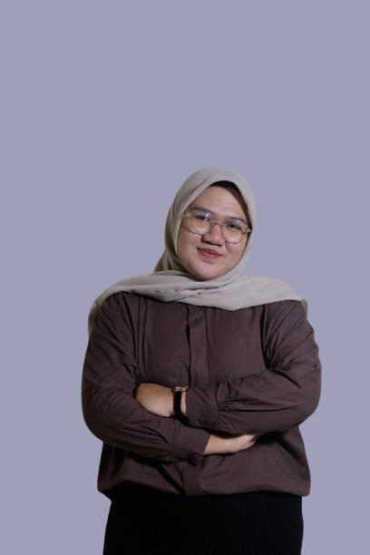

Halo, saya Maura Anjelli Rizky Raharjo
Selamat datang di website pribadi saya

Tentang Saya
Merupakan seorang mahasiswa semester 6 yang sedang menempuh pendidikan dalam program studi Manajemen Informasi Kesehatan Sekolah Vokasi Universitas Gadjah Mada. Saya telah memiliki pengalaman kerja di bidang rekam medis dan informasi kesehatan melalui kegiatan PKL yang telah saya laksanakan di beberapa instansi. Selain itu saya juga telah mengembangkan kemampuan dalam pengodean penyakit, analisis data kesehatan, perancangan desain grafis melalui proyek akhir yang dilaksanakan setiap semester.
Pendidikan
D4 Manajemen Informasi Kesehatan Sekolah Vokasi Universitas Gadjah Mada
Pengalaman Kerja
- Dinas Kesehatan Kabupaten Kudus - PKL Komprehensif
- Asisten Praktikum Program Studi Manajemen Informasi Kesehatan - Mata kuliah Akreditasi dan Manajemen Risiko
- Puskesmas Umbulharjo - PKL
- Rumah Sakit PKU Muhammadiyah Bantul - PKL
Pengalaman Organisasi dan Kepanitiaan
- Kepala Divisi PSDM Unit Fotografi Universitas Gadjah Mada
- Pelantikan Calon Anggota Unit Fotografi 31 - Ketua Pelaksana
- Pameran Fotografi Porseni - Staff Tangkai Seni Fotografi
- Pameran Pra-Pelantikan CUFO 31 - Sub-Koordinator Divisi Pameran
- Staff Divisi PSDM Unit Fotografi
- International Guest Lecture on Health Information Management 2023 - Staff Acara
- Kuliah Umum Manajemen Informasi Kesehatan 2023 - Staff Acara
- Pameran Pra-Pelantikan CUFO 30 - Staff Divisi Pameran
Proyek Akhir Semester
Kontak
Email: mauraanjellirizkyraharjo1804@mail.ugm.ac.id
Instagram: @mauraarhj